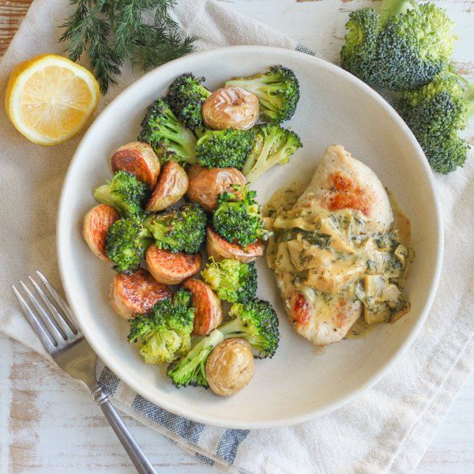

Chicken with Lemon Dill-Artichoke Sauce, Roasted Potatoes & Broccoli

Total Time
40 min
Nutrition (Per Serving)
670.5 kcalCalories
48.7 gProtein
37 gCarbs
38.1 gFat
Full nutrition table
| Calories | 670.5 kcal |
| Total fat | 38.1 g |
| Saturated fat | 16.3 g |
| Trans fat | 0.8 g |
| Cholesterol | 205.7 mg |
| Sodium | 276.7 mg |
| Carbohydrates | 37 g |
| Fiber | 9.1 g |
| Sugars | 6.8 g |
| Protein | 48.7 g |
| Potassium | 1805.1 mg |
| Calcium | 164.1 mg |
| Iron | 3.4 mg |
| Vitamin A | 2532.2 IU |
| Vitamin C | 174.9 mg |
| Vitamin D | 17.8 IU |
Cookware
Ingredients
- 1 (6 oz) jarartichoke hearts, marinated
- 4 crownsbroccoli
- 1 ½ lbchicken breasts, boneless skinless
- 8 fl ozchicken or vegetable broth
- 1 small bunchfresh dill
- 8 fl ozheavy whipping cream
- 1lemon
- 1 lbnew potatoes
- black pepper
- extra virgin olive oil
- garlic powder
- salt
Steps
- Preheat oven to 425°F.
- Wash and dry the fresh produce.1 lb new potatoes
4 crowns broccoli
1 lemon
1 small bunch fresh dill - Halve potatoes and divide between two baking sheet pans. Drizzle with oil, then season with salt and pepper; toss to combine and spread out in an even layer.2 tsp extra virgin olive oil
¼ tsp salt
¼ tsp black pepper - Place baking sheets in the oven (it doesn't have to be fully heated) and roast until the potatoes start to soften, 15-18 minutes.
- Meanwhile, separate broccoli into bite-sized florets and cut stems into smaller pieces. Place in a large bowl, drizzle with additional oil, then season with salt and pepper. Toss to coat and set aside.1 tbsp extra virgin olive oil
½ tsp salt
¼ tsp black pepper - Preheat a large skillet over medium-high heat.
- While the skillet heats up, holding a knife parallel to the cutting board, cut the chicken in half horizontally to form thin fillets. Season with salt and pepper on both sides.1 ½ lb chicken breasts, boneless skinless
½ tsp salt
¼ tsp black pepper - Once the skillet is hot, add oil and swirl to coat the bottom. Add chicken and pan-fry until golden brown and cooked through, 3-4 minutes per side. Remove chicken to a plate, loosely cover with aluminum foil, and set aside. (Reserve skillet for later use.)4 tsp extra virgin olive oil
- When the potatoes are starting to soften, remove from the oven. Add broccoli, toss to combine, and spread out in an even layer. Return baking sheets to the oven and continue to roast until the veggies are fork-tender, about 12 minutes. Remove from oven. (Reserve bowl for later use.)
- Meanwhile, using a clean cutting board, zest and juice lemon into the reserved skillet.
- Add broth, cream, and garlic powder to the skillet with the lemon; stir to combine the sauce and bring to a boil over high heat. Once boiling, reduce heat to medium-low and simmer, stirring occasionally, until thickened, 6-7 minutes.8 fl oz (1 cup) chicken or vegetable broth
8 fl oz (1 cup) heavy whipping cream
1 ½ tsp garlic powder - While the sauce is cooking, drain and roughly chop artichokes. Place in the reserved bowl.1 (6 oz) jar artichoke hearts, marinated
- Shave dill leaves off the stems; discard stems and mince the leaves. Add to the bowl with the artichokes.
- When the sauce has thickened, add artichokes and dill, then stir to combine. Continue to cook until warmed through, about 1 minute. Remove from heat.
- To serve, divide chicken and veggies between plates. Spoon sauce over chicken and enjoy!